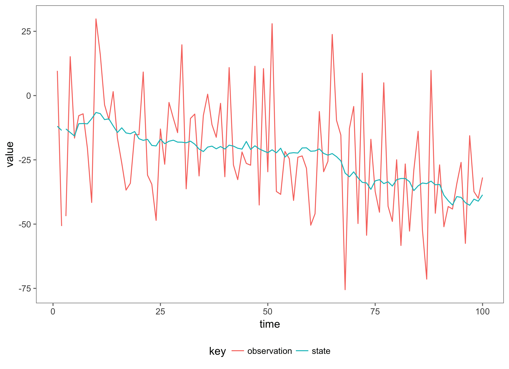

Determining The Latent State
Consider a simple state space model with a Gaussian Observation distribution and Brownian motion latent state, \(x(t)\):
The true mean of the process at time \(t\), \(x(t)\) is obscured by measurement noise \(v(t)\). The goal of inference is to determine the true mean of the process, given the noisy measurements \(y(t)\).
In this case, the Kalman Filter can be used to determine the posterior distribution of the state at time \(t\). This model is tractable, since the sum of two Gaussian distributions is Gaussian with the mean and variance added.
Particle Filter
The bootstrap particle filter can be used when the observation distribution or system evolution is not Gaussian, or the transformations involved are non-linear. First consider a general state-space model of the form,
The observation distribution is denoted by \(\pi\) and has optional static parameters \(\theta\), representing the scale of the observation distribution which can be interpreted as the scale of the measurement noise. The latent-state has a Markov transition kernel which can be evaluated pointwise, denoted by \(p\), the evolution of the latent state has accompanying static parameters \(\theta\). The initial state is simulated from the initial state distribution, parameterised by \(\theta\).
Roughly speaking, the particle filter approximates the latent state with a particle cloud. Consider a parameterised model where the values of \(\theta\) are know, then the steps to implement the bootstrap particle filter are as follows:
-
Set \(i = 0\), Initialise the particle cloud by simulating N particles from the initial state distribution N times \(x(t_0)^{(k)} \sim p(x(t_0)^{(k)} \theta), k = 1,…,N \) -
Advance the particle cloud to the time of the next observation \(x(t_{i+i})^{(k)} \sim p((x(t_i)^{(k)} x(t_{i-1})^{(k)}, \theta)), k=1,\dots,N\) -
Calculate the marginal likelihood of the observation at time \(t_i\), for each particle: \(w^\star(t_i)^{(k)} \sim \pi(y(t_i) x(t_i)^{(k)}, \theta), k=0,\dots,N\) - Normalise the weights \(w(t_i)^{(k)} = w^\star(t_i)^{(k)} / \sum_{j=1}^N w^\star(t_i)^{(j)}\)
-
Resample the particle using an appropriate resampling scheme, so that each particle is represented in the sample in proportion with the value of its associated weight. This gives an approximate sample from the filtering distribution, \(p(x(t_i) y(t_i))\). - If there are observations remaining, increment the value of \(i\) and go to step 2
The value of interest is the filtering distribution, which is represented by a collection of particles at each time step. A statistic of interest is the mean of the filtering distribution, along with order statistics representing the uncertainty in estimating the filtering distribution. Increasing the number of particles in the filter will increase the accuracy of the estimate of the filtering distribution, at the cost of extra computation.
As an example of the particle filter, we will apply it to the Gaussian model presented above:
import com.github.jonnylaw.model._
import akka.stream.scaladsl._
import akka.stream._
import akka.actor.ActorSystem
import cats.implicits._
val sdeParameter = SdeParameter.brownianParameter(m0 = 1.0)(c0 = 3.0)(sigma = 1.0)
val p = Parameters.leafParameter(scale = Some(3.0), sdeParameter)
val sde = Sde.brownianMotion(1)
val model = Model.linearModel(sde)
This defines the parameters, the latent state and the observation model for the linear Gaussian Model. Now, we can simulate realisations from the model and use only the observations, \(y\) to estimate the filtering distribution \(x(t)\):
implicit val system = ActorSystem("SimulateToCSV")
implicit val materializer = ActorMaterializer()
implicit val executionContext = system.dispatcher
val data = SimulateData(model(p)).
simRegular(1.0).
take(100).
map((d: Data) => d.show).
runWith(Streaming.writeStreamToFile("data/gaussian_sims.csv"))
Now we have 100 observations from a simple linear model:

val filter = ParticleFilter.filter(Resampling.systematicResampling, t0 = 0.0, 1000) compose model
The filter is a function from a model to an Akka stream flow, once it is composed with a model it forms a Flow[Data, PfState]. This Flow is a reusable processing stage which transforms elements of type Data into elements of type PfState containing the particle approximation of the filtering distribution as well as the current pseudo-marginal likelihood (an estimate of the likelihood used in model fitting) of the parameters given the observed values. In this case, we will use the same parameters used to simulate the data, when filtering:
DataFromFile("data/gaussian_sims.csv").
observations.
via(filter(p)).
map(ParticleFilter.getIntervals(model, p)).
map(_.show).
runWith(Streaming.writeStreamToFile("data/gaussian_filtered.csv")).
onComplete(_ => system.terminate())